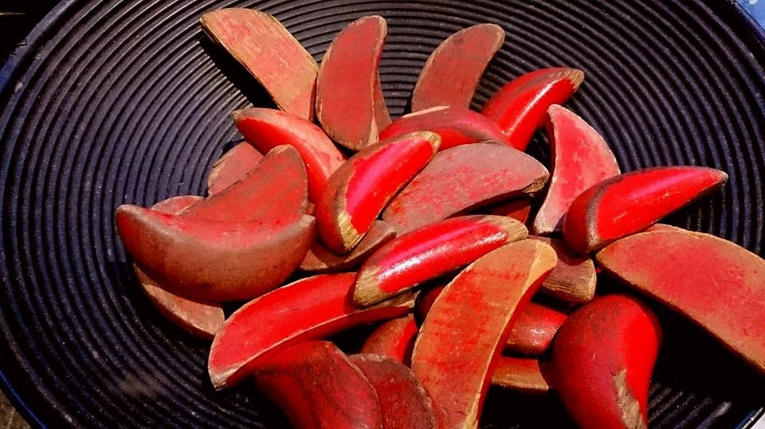

算命仙
2018-01-13

大家好，我是老闆「那個誰」，人生苦短，不如聽個「故事」解解悶？
「老子命一條，要殺就殺，十八年後又是一條好漢！」
這是電視劇裡面草莽人物最常說的一句話。
老闆我卻很困惑，你怎知你來生不是豬狗羊，或外星人？還是說這些草莽都有算命算到下輩子的力量，或是這是一種對恐懼死亡的自我說服？
命有幾條，老闆我不是很確定，畢竟平行時空有否另一個我，誰也抓不準。
來生去哪裡？老闆我也不是很確定，只能諸惡盡量不做，有善多少行一些，讓下次來的那個自己，少一點負擔，多一點希望。
若不幸今生多劫難，人就會興起算命的念頭，來到某個攤位前小丟幾百、大丟幾千，讓眼前的先生去google這輩子無奈背後的千頭萬緒，試圖趨吉避凶、未雨綢繆。
一個好的算命仙，同時也是位強大的心理醫生，診斷著你前世今生的願望，開出似是而非的藥單，吃了不死，不吃照舊活著。
這所謂的「仙仔」，總是冒著洩漏天機的危險，拿走你掏出的金錢，說著你心中最害怕的畫面，或是你最渴望的片段。
不過人都忘了，命不是拿來算，是拿來活的，故事就是活的證據，那些證據就是老闆我最愛的收藏，悲歡離合、愛恨情仇，你要不也來上一瓶，或許也能看見你自己的命。
--無論你是誰，給我你的故事，我告訴你不知道的自己--